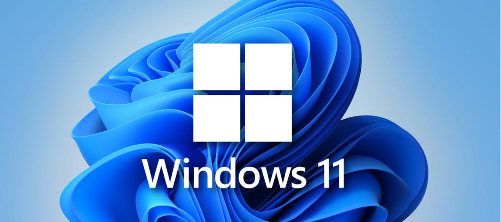
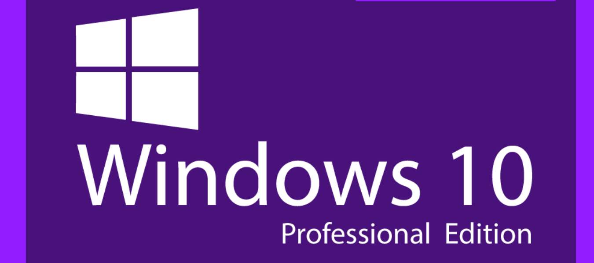
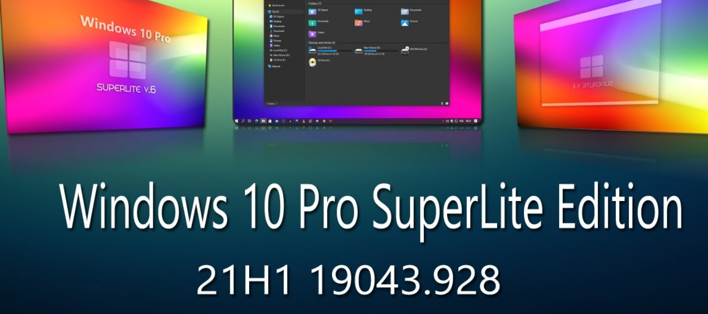
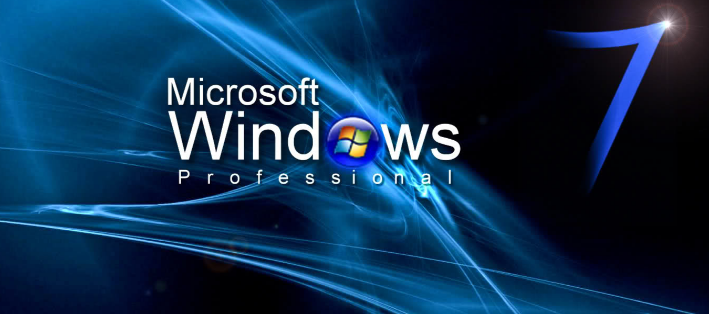

Update

Windows 11 Pro Full Version adalah Sistem Operasi baru dari Microsoft yang menampilkan berbagai perubahan dari antarmuka dari Start Menu, Windows Explorer, dll. Muncul dengan tata letak desktop yang serba baru, antarmuka Windows Explorer yang didesain ulang, Start Menu baru, dan banyak lagi. Bagian utama dari Windows 11 Pro Final ini adalah menjadi presentasi dari perubahan antarmuka pengguna yang signifikan. Beberapa pengguna senang dengan perubahan itu, tetapi seperti biasa pasti ada beberapa pengguna yang menganggapnya sebagai perubahan biasa.
| O.S | SIZE | LINK DOWNLOAD |
|---|---|---|
| Windows 11 Pro Full Version | 4 GB | |

Versi terbaru dari Windows 10 dirilis pada 19 Mei 2021 adalah Windows 10 Pro 21H2 Final diperbarui Mei 2022. Windows 10 Pro 21H2 Full telah membuat beberapa perubahan besar, termasuk mengoptimalkan penggunaan memori, menunda pembaruan Windows, kustomisasi folder, program sandbox dan lainnya. Microsoft sendiri telah memberi tahu beberapa fitur tambahan baru di Windows 10 Pro, termasuk keberadaan toggle Microsoft Edge baru yang memungkinkan pengguna untuk mengakses kamera dan mikrofon ketika Anda membuka Microsoft Edge.
| O.S | SIZE | LINK DOWNLOAD |
|---|---|---|
| Windows 10 Pro | 2,2 GB | |

Windows 10 SuperLite Pro 21H2 adalah bagian dari pembaruan Windows 10 Pro 21H1 dasar dan segera aktif pada instalasi nanti. Seperti yang kita ketahui, Windows 10 Lite Full memiliki banyak kelebihan. Itu sebabnya r3ndy.com ingin membagikan versi Windows 10 SuperLite. Pada kesempatan ini, saya akan berbagi Windows 10 SuperLite Pro 21H2 Final dari Ghost Spectre.
| O.S | SIZE | LINK DOWNLOAD |
|---|---|---|
| Windows 10 SuperLite Pro | 1,2 GB | |

Windows 7 AIO adalah edisi terlengkap dari seri Windows 7 SP1 AIO Final lainnya. Fitur baru telah ditambahkan dengan sangat cerdas yang hanya dapat di temui di versi windows ini. Windows 7 SP1 Offline sangat sempurna dalam hal fleksibilitas untuk pengguna rumahan dan juga untuk para profesional. Layar sistem, gadget baru yang indah, Efisiensi OS dan dimasukkannya mode presentasi .
| O.S | SIZE | LINK DOWNLOAD |
|---|---|---|
| Windows 7 AIO | 4 GB | |